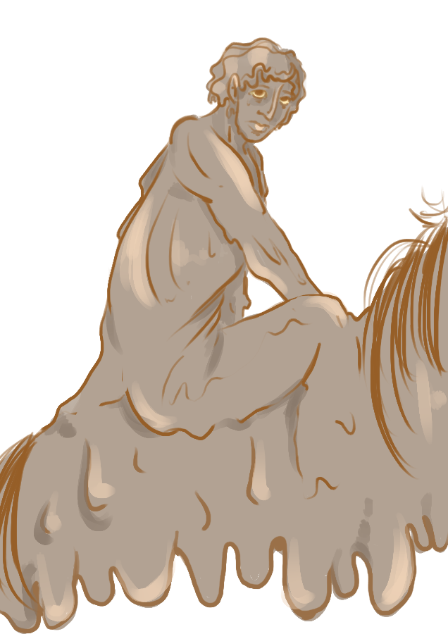
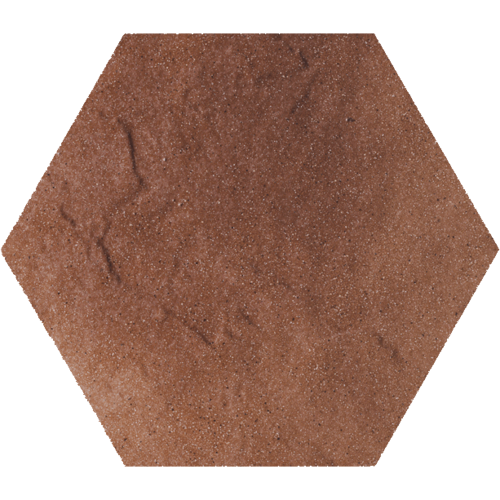
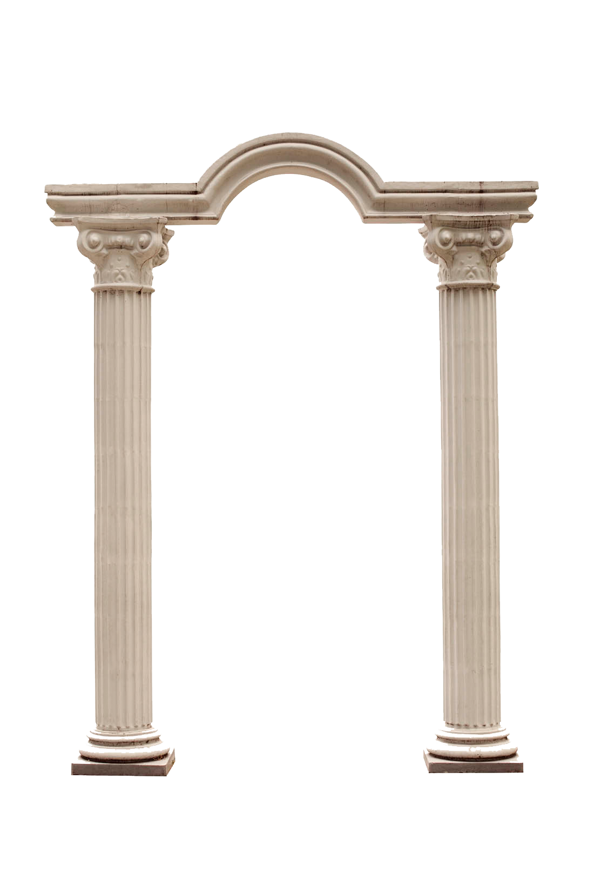

Curio is the angel of Death - but not in the way you probably think. Death is, first and formost, a transformation. For fleshy beings - to dirt and compost, for us - to a new state of being.
And Curio is in a constant state of transforming and reforming. He switches between the M0ODes by simply reshaping his face to fit either one he needs.
He is shy and almost never leaves his territory, is deathly scared of humans and all things organic and loves to do some recycling.